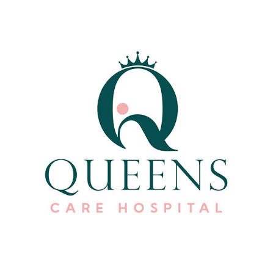
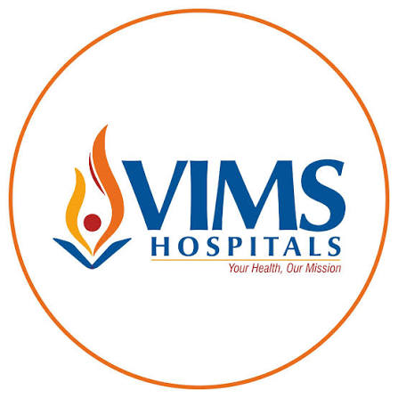

✚
CareConnect
Verified healthcare institutions
Find Doctors →
TRUSTED NETWORK
Leading Hospitals &
Healthcare Centers.
Connect with premier hospital chains, state-of-the-art multi-specialty institutions, and renowned research facilities for comprehensive clinical care.
✓ Multi-Specialty Facilities
✓ 17,000+ Doctors Network
✓ Modern Infrastructure
9+
Premier Hospital Networks
PARTNER INSTITUTIONS
Featured Hospital Networks
Discover top-tier hospital systems known for medical excellence.
Tertiary & Quaternary Care
→
Apollo Hospitals

Cardiac & Multi-Specialty
→
CARE Hospitals

Government Teaching Hospital
→
KGH Hospitals

Advanced Multi-Specialty
→
KIMS Hospitals

European Standard Care
→
Medicover Hospitals

Comprehensive Cancer Institute
→
Omega Hospitals

Specialized Healthcare
→
Queens Hospitals

Cardiac & Trauma Care
→
Seven-Hills Hospitals

Medical Sciences Institute
→
VIMS Hospitals
NETWORK STATS
Hospital Network & Availability Overview
Comprehensive branch distribution and medical practitioner capacity.
| 🏥 Hospital Network | 🏢 Infrastructure & Branches | 👨⚕️ Available Doctors |
|---|---|---|
| Apollo Hospitals | 75 Major Hospitals • 520 Clinics | 11,000+ Specialists |
| CARE Hospitals | 16 Multi-Specialty Hospitals in 7 Cities | 1,400+ Clinicians |
| KGH Hospitals | 1 Main Tertiary Teaching Campus | 350+ Senior Consultants |
| KIMS Hospitals | 27 Multi-Specialty Hospitals | 2,000+ Medical Experts |
| Medicover Hospitals | 26 Multi-Specialty Facilities | 1,000+ Doctors |
| Omega Hospitals | 6 Specialized Oncology Centers | 180+ Oncologists |
| Queens Hospitals | 2 Regional Hospital Branches | 60+ Doctors |
| Seven-Hills Hospitals | 2 Major Hospital Campuses | 300+ Consultants |
| VIMS Hospitals | 1 Main Institute Campus | 75+ Specialist Doctors |